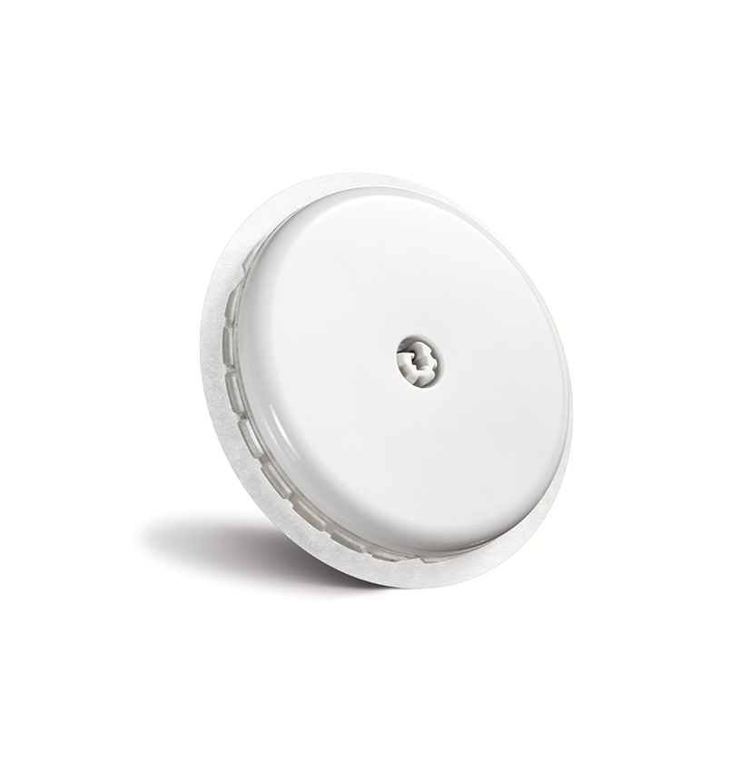

Под самоконтролем понимают анализ некоторых параметров в домашних условиях: самостоятельное определение уровня сахара в крови и моче, кетоновых тел (ацетона) в моче, измерение веса и артериального давления. Ценность результатов, полученных при самоконтроле в домашних условиях, гораздо выше, поскольку они отражают ваше состояние в условиях реальной жизни. Проведение самоконтроля позволит Вам:
Все показатели, полученные при самоконтроле, а также информацию, касающуюся вашего рациона питания, физической активности и получаемой терапии, необходимо заносить в Дневник самоконтроля и показывать врачу при каждом посещении. Существуют программы, позволяющие считывать показания с вашего глюкометра в компьютер, добавлять туда другую информацию, и таким образом вести электронный дневник.
Основной целью управления сахарным диабетом является достижение целевых показателей уровня глюкозы в крови и гликированного гемоглобина, отражающего «средний» уровень глюкозы в крови за 2-3 месяца, чтобы не допустить развития осложнений сахарного диабета. Индивидуальную цель лечения (гликированный гемоглобин и уровень глюкозы натощак и после еды) Вы подбираете вместе с вашим врачом, она будет зависеть от нескольких условий: длительности заболевания и наличия осложнений, возраста и сопутствующих заболеваний и т.д. В большинстве случаев оптимальной целью является уровень гликированного гемоглобина < 7%.
| Категория | Уровень глюкозы утром | Уровень глюкозы до приема пищи | Уровень глюкозы спустя минимум 90 минут после приема пищи |
|---|---|---|---|
| Здоровый человек | 4.0-5.9 ммоль/л | до 7.8 ммоль/л | |
| Человек с сахарным диабетом 1 типа | 4.5-7 ммоль/л | 4.5-7 ммоль/л | 5-9 ммоль/л |
Для самоконтроля уровня глюкозы в крови чаще всего используются глюкометры и специальные одноразовые тест-полоски. Но также можно использовать систему непрерывного мониторирования глюкозы крови, представляющую собой датчик, устанавливающийся на тело (чаще всего, руки), который предназначен для постоянного и автоматического определения значений глюкозы в жидкости подкожной жировой ткани в диапазоне 2.2-22 ммоль/л. Такое тщательное определение колебаний гликемии позволяет:
Вы и врач получают полную картину колебаний уровня глюкозы в крови в течение суток, что невозможно при определении сахара в крови при помощи глюкометра. Это особенно актуально в ночные и ранние утренние часы, когда Вы спите и не проводит самоконтроль.
Появление глюкометров и новых препаратов инсулина, в том числе аналогов инсулина, а также современных средств введения инсулина — шприц-ручек, инсулиновой помпы, кардинально изменило жизнь людей с сахарным диабетом 1 типа, в том числе и характер питания. Мы стали говорить о «либерализованной диете», то есть о расширении перечня продуктов, которые можно есть при сахарном диабете 1 типа. Однако более правильным будет забыть термин «диета», а говорить о том, что при сахарном диабете 1 типа рекомендации по питанию не будут отличаться от таковых для здоровых людей за исключением одного условия — необходимо учитывать углеводы, они требуют введения определенной дозы инсулина.
Неусвояемые углеводы (неподсчитываемые, неучитываемые) — это группа пищевых волокон, основным представителем которых является клетчатка:
Усвояемые углеводы (подсчитываемые, учитываемые) можно разделить на медленно- и быстроусвояемые. Медленноусвояемые («сложные», «несладкие», «медленные»):
Быстроусвояемые («простые», «сладкие», «быстрые»):
К подсластителям (сахарозаменителям) относят аспартам, сахарин, цикламат и ацесульфам, которые не оказывают влияния на уровень глюкозы в крови и не обладают энергетической ценностью, поэтому их могут использовать даже люди с избыточной массой тела или ожирением. Кроме того, Вы можете позволить себе не отказываться совсем от сладких газированных напитков, лишь выберите диетические версии этих напитков (без сахара). Хотя даже в этом случае нельзя расценивать их как здоровое питание.
Cистема «хлебных единиц» (или ХЕ) была разработана для того, чтобы соотнести количество употребляемых усваиваемых углеводов и дозы инсулина, вводимого перед едой. За 1 ХЕ принято считать 10-12 граммов усвояемых углеводов. Для подсчёта используем обычную формулу пропорций: \[x = {a \cdot b \over 100}\] где \(a\) — масса еды, а \(b\) — количество углеводов в 100 граммах еды.
Приблизительное необходимое суточное количество ХЕ в зависимости от пола, массы тела и физической активности приведено в таблице ниже. Индивидуальную потребность Вы должны рассчитать и согласовать совместно с врачом.
Известно, что 1 ХЕ повышает уровень глюкозы в крови в среднем на 2 ммоль/л. Однако уровень глюкозы в крови после еды зависит не только от количества углеводов (ХЕ), но и от степени их всасывания, которая называется гликемическим индексом. Гликемические индексы некоторых продуктов (по сравнению с глюкозой, чей гликемический индекс составляет 100%):
Помните, что физическая активность может быть причиной гипогликемии. Тем не менее, диагноз «сахарный диабет» — не повод отказываться от физкультуры или любимых видов спорта (исключения — дайвинг, альпинизм, парапланеризм — те виды спорта, при которых развитие гипогликемии может быть опасно в силу сложности ее купирования).
Проверяйте свой уровень глюкозы в крови до начала спортивных занятий. Уровень глюкозы выше 13–14 ммоль/л и/или наличие кетоновых тел в моче свидетельствует о дефиците инсулина: физическую активность надо отложить. Уровень глюкозы ниже 3,9 ммоль/л говорит о гипогликемии, которую необходимо купировать до начала тренировки.
Перед началом тренировки убедитесь, что у вас с собой есть запас быстроусвояемых углеводов (например, глюкоза в таблетках, недиетическая кока-кола, энергетический или спортивный напиток, сок, сахар). Также поставьте в известность тренера и/или друзей по команде о том, что у вас сахарный диабет, расскажите про симптомы гипогликемии и обучите их оказывать Вам помощь.
Поскольку при сахарном диабете 1-го типа все b-клетки поджелудочной железы погибают и инсулин не вырабатывается, то единственный способ поддерживать нормальный уровень глюкозы в крови — введение инсулина. Существует 2 способа имитации физиологической секреции инсулина:
Суммарную суточную дозу инсулина вам необходимо рассчитать вместе с вашим врачом, поскольку она зависит от целого ряда факторов, и прежде всего от веса и длительности заболевания.
Доза базального инсулина:
Коррекция дозы базального независимо от времени введения проводится по срединому показателю уровня глюкозы натощак за 3 предыдущих дня: